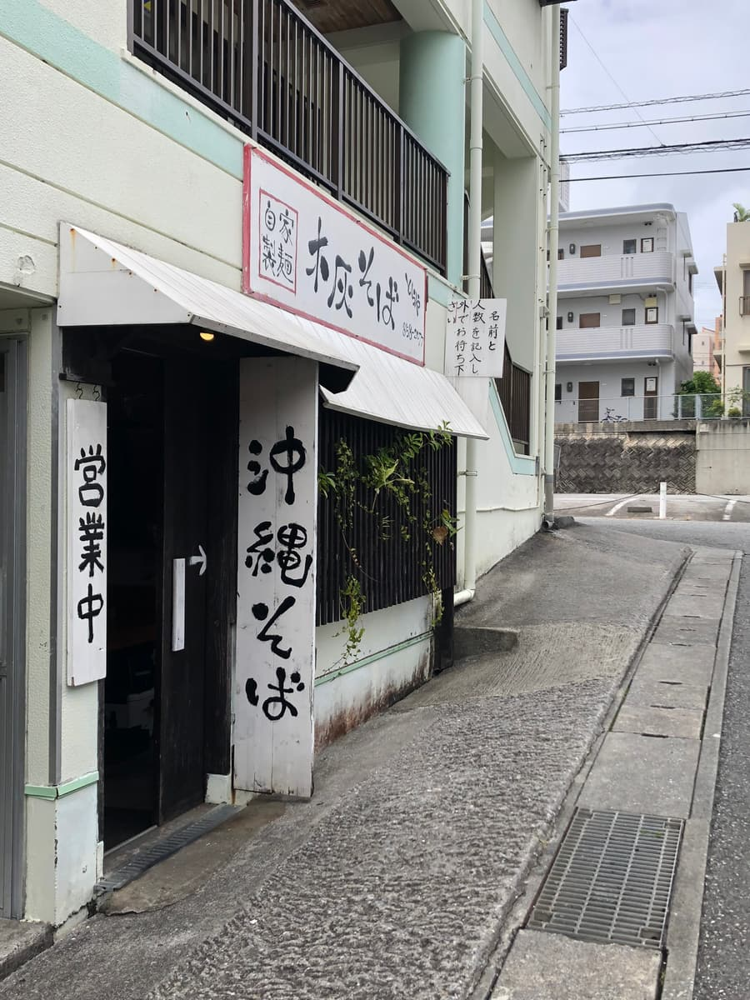
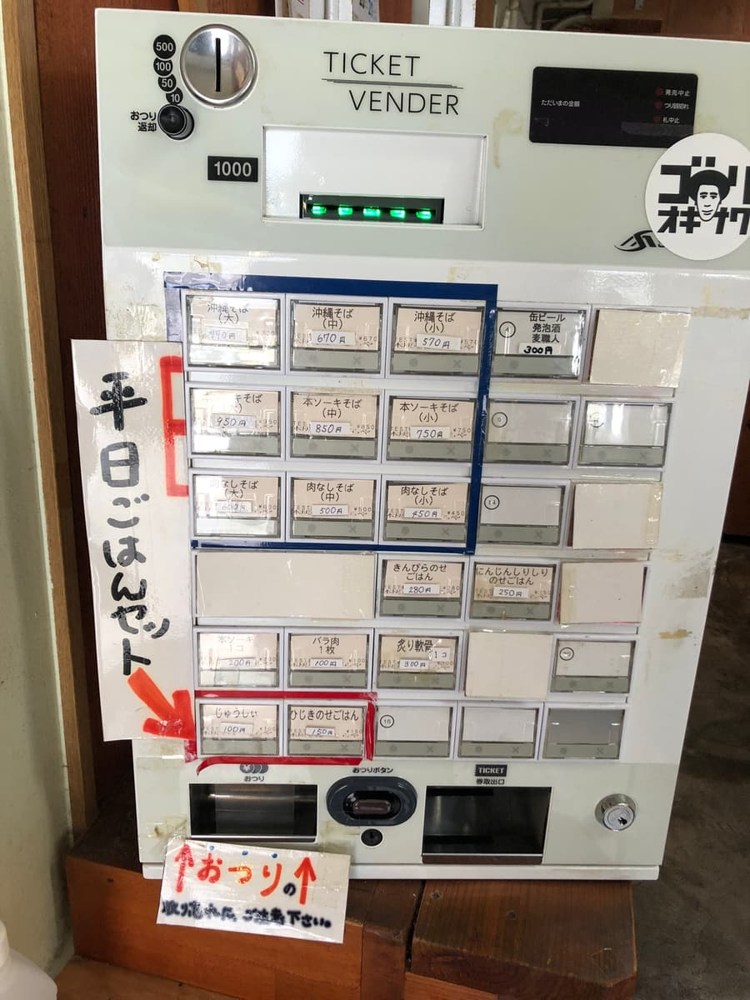
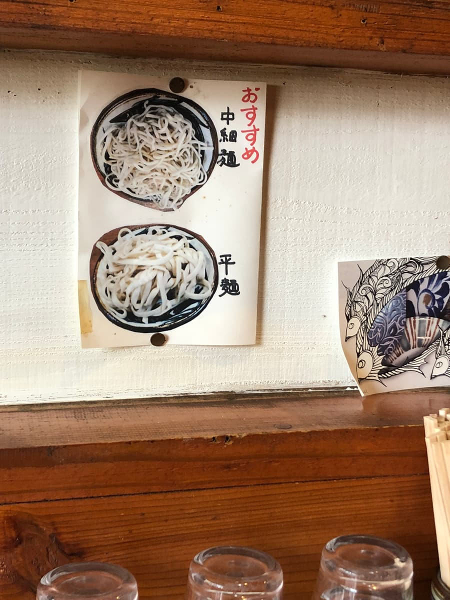
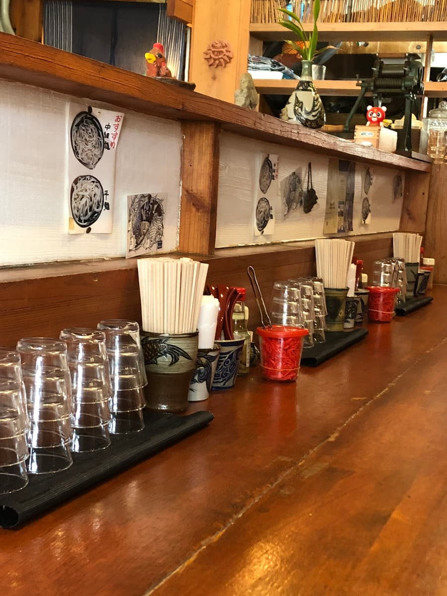
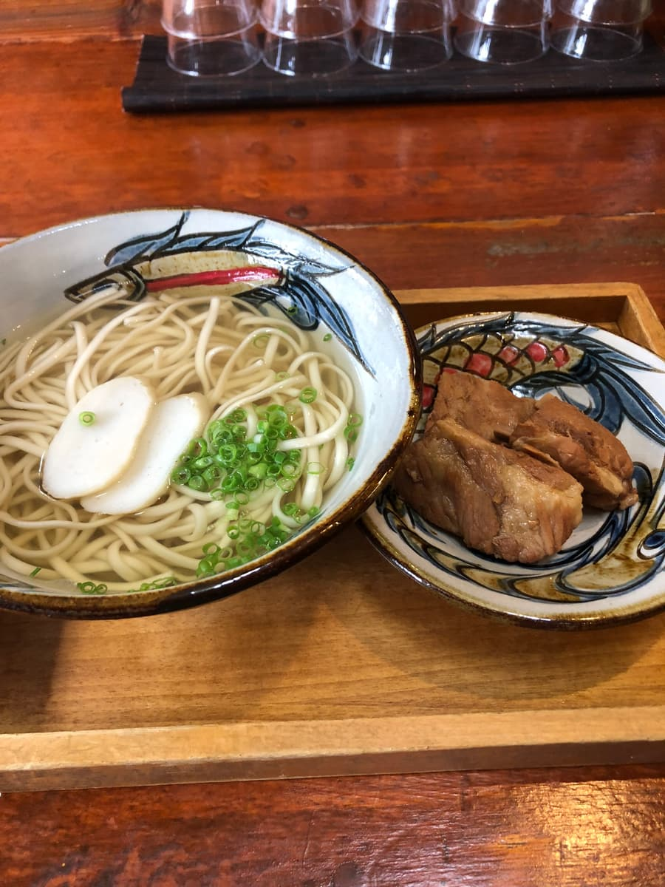
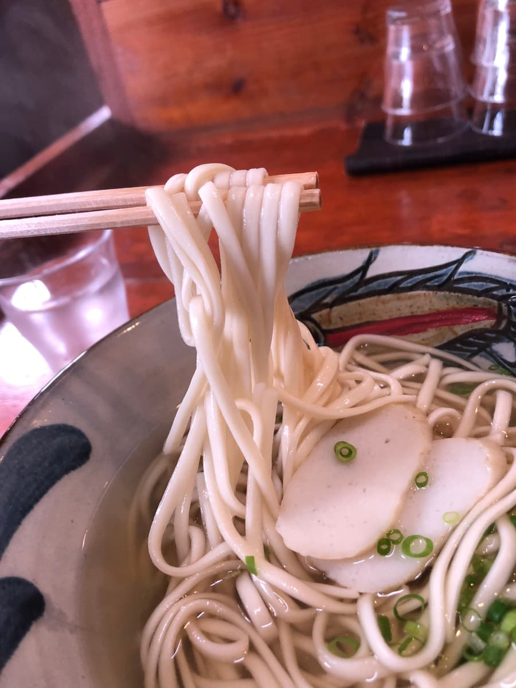

이 글은 AI(Chat GPT 4o)로 작성하고 일부 덧붙여 썼습니다😁
2024년 9월에 먹었습니다😄 나하시 아카미네에 있는 “목카이 소바 토라야”에 다녀왔는데, 그 오키나와 소바의 맛에 놀랐습니다✨. 가게 분위기부터 나오는 소바까지 전체적으로 매우 퀄리티가 높고, 오키나와 소바를 좋아하는 사람으로서 꼭 여러분께 추천하고 싶은 가게라서 “추천 가게에도 뒤지지 않는 오키나와 소바 가게” 코너에 게재합니다😆

가게에 들어가면 먼저 눈에 들어오는 것은 식권 발매기. 메뉴 종류가 다양해서, 오키나와 소바와 뼈 있는 돼지갈비(혼소키) 소바, 주시(오키나와식 영양밥)와의 세트 메뉴 등 모두 먹고 싶어지는 것들뿐. 저는 망설임 없이 “혼소키 소바”를 골랐지만, 다음에는 다른 메뉴에도 도전해 보고 싶네요🍚.
면은 중세면과 납작면 중에서 고를 수 있는데, 추천받은 “중세면”을 선택하기로.


주문 후 기다리는 동안 가게 안을 둘러보니, 나무를 기조로 한 따뜻한 공간이 펼쳐져 있었습니다. 벽에는 오키나와다운 장식품이 늘어서 있고, 카운터에는 붉은 생강 초절임과 유리컵이 가지런히 놓여 있어서 세세한 부분까지 신경 쓴 인상을 받습니다. 카운터석 위주라 혼자서도 들어가기 쉬운 것도 반가운 포인트입니다😊.


잠시 후 나온 “혼소키 소바”. 맑은 국물에 중세면, 그리고 따로 접시에 나온 뼈 있는 돼지갈비(혼소키)가 인상적입니다. 먼저 국물을 한 입. 가쓰오 육수가 확실하게 살아 있어서 입안에서 확 퍼지는 풍부한 향이 참을 수 없습니다😋.

다음으로 면을 먹었습니다. 이곳은 자가제면이고, 이번에는 추천받은 중세면을 골랐습니다. 탄력이 있으면서도 술술 먹을 수 있는 식감이 아주 기분 좋습니다. 국물과의 궁합도 최고라서 젓가락이 쭉쭉 가네요. “목회 소바”라고 들으면 독특한 풍미를 기대하게 되지만, 이번에는 그 풍미가 그다지 느껴지지 않았습니다. 다만 면 삶기가 절묘해서 그대로도 충분히 맛있는 퀄리티였습니다🍜.
그리고 메인인 혼소키! 이건 따로 접시에 나오는 스타일입니다. 이런 배려가 반갑네요. 국물 맛을 해치지 않기 위한 궁리가 되어 있어서 마지막까지 가쓰오 육수의 풍미를 즐길 수 있습니다. 혼소키는 놀라울 만큼 부드러워서 입안에서 부들부들 무너질 정도. 양념이 확실하게 배어 있어서 이것만으로도 만족감이 높은 일품입니다. 따로 접시에 나오기 때문에 가능한 즐기는 방법이 있다는 것도 “목카이 소바 토라야”의 특징 중 하나네요.
전체적으로 이곳의 오키나와 소바는 아주 높은 수준으로 완성되어 있습니다. 가쓰오 육수를 좋아하는 분은 꼭 드셔 보셨으면 하는 가게입니다! 또 가게 안 분위기도 편안해서 혼자서도 부담 없이 방문할 수 있습니다. 다음에는 주시(오키나와식 영양밥) 세트나 다른 메뉴도 먹어 보고 싶습니다✨.
“목카이 소바 토라야”에서 꼭 오키나와 소바의 매력을 마음껏 맛보세요! 분명 만족하실 거예요😊.
평가(12점/15점): 면, 국물, 고명의 밸런스가 잡힌 수준 높은 오키나와 소바 가게라고 생각했습니다. 공항에서도 가까우니 관광객 여러분도, 현지 여러분도 한 번쯤 어떠신가요. 추천해요😄
면: ★★★★☆（4）
수프: ★★★★☆（4）
토핑: ★★★★☆（4）